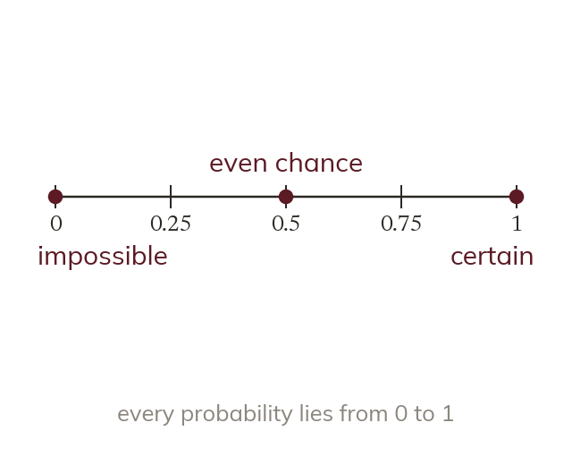

From impossible to certain
Probability runs from 0 for impossible to 1 for certain. An even chance is 12, or 0.5, or 50%.
Probability measures how likely an outcome is, on a scale from 0 for impossible to 1 for certain. An even chance is 12, which is also 0.5 or 50%.